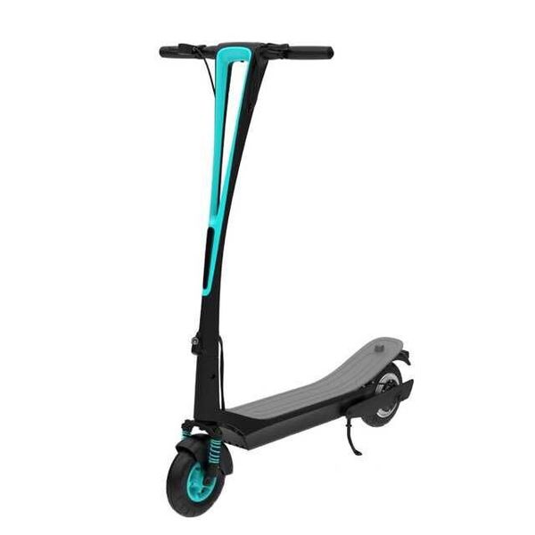

KIDS
Razor E90
Максимальная скорость::до 14 км/час||Непрерывный ход на полной зарядке::до 60 минут||Возраст::От 5 лет||Вес человека::до 55 кг||Вес электросамоката::9,8 кг.||Тормоз::Задний ножной||Мощность мотора::100 W||Привод::Цепной||Рост::от 100 до 160 см||Рама и вилка::Сталь||Колёса диаметр::140 мм||Подножка::Есть, боковая||Ручка акселератора::Кнопочная (справа)||Аккумулятор::Герметичный свинцово-кислотный 12 вольт||Зярядка 100%::Около 6 часов||Защита::От брызг и ударов||Высота руля от деки (от земли)::71 см, ( 83 см)||Ширина платформы для ног::20 см||Длина деки::55 см||Дорожный просвет::6 см||Ширина руля::35,5 см||Общая длина::80 см||Гарантия::6 месяцев
images/E90_BL_chain_LowRes.jpg||images/E90_BL_deck_LowRes.jpg||images/E90_BL_handlebars_LowRes.jpg||images/E90_BL_throttle_LowRes.jpg||images/E90_BL_US_Action_lo.jpg
KIDS
Razor Power Core E90
Максимальная скорость::до 16 км/час||Непрерывный ход на полной зарядке::до 90 минут||Возраст::От 5 лет||Вес человека::до 55 кг||Вес электросамоката::10 кг||Тормоз::Ручной передний||Мощность мотора::90 W||Привод::Цепной||Рост::от 100 до 160 см||Рама и вилка::Сталь||Колёса диаметр::140 мм||Подножка::Есть, боковая||Ручка акселератора::Кнопочная (справа)||Аккумулятор::Герметичный свинцово-кислотный 12 вольт||Зярядка 100%::Около 6 часов||Защита::От брызг и ударов||Высота руля от деки (от земли)::71 см, ( 83 см)||Ширина платформы для ног::20 см||Длина деки::55 см||Дорожный просвет::6 см||Ширина руля::35,5 см||Общая длина::80 см||Гарантия::6 месяцев
images/PowerCoreE90_PK_Product.jpg||images/PowerCore90_BKGR_Kickstand.jpg||images/PowerCore90_BKGR_Throttle.jpg||images/PowerCore90_BKGR_Brake.jpg
KIDS
Razor E100
Максимальная скорость::до 16 км/час||Непрерывный ход на полной зарядке::до 60 минут||Возраст::От 7 лет||Вес человека::до 55 кг||Вес электросамоката::13 кг||Тормоз::Ручной передний (регулируемый)||Мощность мотора::100 W (Hight крутящий момент)||Привод::Цепной||Рост::от 110 до 170 см||Рама и вилка::Сталь||Переднее колесо диаметр::200 мм (накачиваемое)||Подножка::Есть, боковая||Ручка акселератора::Кнопочная (справа)||Стартер::Ножной (оттолкнуться ногой, для включения электропривода)||Аккумулятор::Герметичный свинцово-кислотный 12 вольт||Зярядка 100%::Около 6 часов||Защита::От брызг и ударов||Высота руля от деки (от земли)::77 см, ( 91 см)||Ширина платформы для ног::20 см||Длина деки::53 см||Дорожный просвет::7 см||Ширина руля41::35,5 см||Общая длина::80 см||Гарантия::6 месяцев
images/E100_RD_Action_LoRes.jpg||images/E100_PK_BrakeLever_LowRes.jpg||images/E100_PK_ChainDrive_LowRes.jpg||images/E100_PK_ChainGuard_LowRes.jpg||images/E100_PK_KickStand_LowRes.jpg||images/E100_PK_TwistGrip_LowRes.jpg||images/E100_PK_Action_LowRes.jpg
KIDS
Razor E100 Glow
Подсветка самоката::Яркая подсветка на платформе для ног||Максимальная скорость::до 16 км/час||Непрерывный ход на полной зарядке::до 60 минут||Возраст::От 7 лет||Вес человека::до 55 кг||Вес электросамоката::14.5 кг||Тормоз::Ручной передний (регулируемый)||Мощность мотора::100 W (Hight крутящий момент)||Привод::Цепной||Рост::от 110 до 170 см||Рама и вилка::Сталь||Переднее колесо диаметр::200 мм (накачиваемое)||Подножка::Есть, боковая||Ручка акселератора::Кнопочная (справа)||Стартер::Ножной (оттолкнуться ногой, для включения электропривода)||Аккумулятор::Герметичный свинцово-кислотный 12 вольт||Зярядка 100%::Около 6 часов||Защита::От брызг и ударов||Высота руля от деки (от земли)::77 см, ( 91 см)||Ширина платформы для ног::20 см||Длина деки::53 см||Дорожный просвет::7 см||Ширина руля41::35,5 см||Общая длина::80 см||Гарантия::6 месяцев
images/E100Glow_BL_Deck_LowRes.jpg||images/E100Glow_BL_Brake_LowRes.jpg||images/E100Glow_BL_KickStand_LowRes.jpg||images/E100Glow_BL_Throttle_LowRes.jpg||images/E100Glow_BL_WheelChain_LowRes.jpg||images/Razor_EGlow_LoRes.jpg
KIDS
Razor E200
Максимальная скорость::до 19 км/час||Непрерывный ход на полной зарядке::до 60 минут||Возраст::От 10 лет||Вес человека::до 70 кг||Вес электросамоката::18 кг||Тормоз::Ручной передний (регулируемый)||Мощность мотора::200 W||Привод::Цепной||Рост::от 110 до 180 см||Рама и вилка::Сталь||Колеса диаметр::200 мм (оба накачиваемые)||Подножка::Есть, боковая||Ручка акселератора::Кнопочная (справа)||Стартер::Ножной (оттолкнуться ногой, для включения электропривода)||Аккумулятор::Герметичный свинцово-кислотный 12 вольт||Зярядка 100%::Около 6 часов||Защита::От брызг и ударов||Ширина платформы для ног::22 см||Дорожный просвет::7 см||Ширина руля41::37,5 см||Общая длина::85 см||Гарантия::6 месяцев
images/e200_chainguard_tl.jpg||images/e200_e200s_tl_chain.jpg||images/e200_e200s_tl_prod_handlebar.jpg||images/e200_e200s_tl_deck.jpg||images/e200_tl_prod_action.jpg
KIDS
Razor E200S
Дополнительные опции::съёмное удобное мягкое сиденье||Максимальная скорость::до 19 км/час||Непрерывный ход на полной зарядке::до 60 минут||Возраст::От 10 лет||Вес человека::до 70 кг||Вес электросамоката::20.8 кг||Тормоз::Ручной передний (регулируемый)||Мощность мотора::200 W (Hight крутящий момент)||Привод::Цепной||Рост::от 110 до 180 см||Рама и вилка::Сталь||Колеса диаметр::200 мм (оба накачиваемые)||Подножка::Есть, боковая||Ручка акселератора::Кнопочная (справа)||Аккумулятор::Герметичный свинцово-кислотный 12 вольт||Зярядка 100%::Около 6 часов||Защита::От брызг и ударов||Дорожный просвет::7 см||Ширина руля41::37,5 см||Общая длина::85 см||Гарантия::6 месяцев
images/e200_e200s_tl_chain.jpg||images/e200_e200s_tl_deck.jpg||images/e200_e200s_tl_prod_handlebar.jpg||images/e200s_tl_prod_action.jpg
Электросамокат E-TWOW S2 BOOSTER
Max скорость::30 км/ч||Дальность хода::до 35 км (при весе 75 кг и скорости 20 км/ч)||Вес::10.8 кг||Ёмкость батареи::243 Вт/ч, Li-Po||Время зарядки 100% (80%)::около 120 мин (около 90 мин)||Max вес человека::125 кг||Max угол подъема в гору::около 25 (при весе 75 кг)||Диаметр колеса::8 дюймов||Размеры (в разложенном виде) Длина х Ширина х Высота::940 x 135 x 1160 мм||Размеры (в сложенном виде) Длина х Ширина х Высота::945 x 135 x 300 мм||Режим эксплуатации (оптимальный)::-10°C ~ 40°C (15°~30°C)||Складная функция::Запатентованная складная система||Система тормоза::Передняя рекуперативная||Амортизаторы::Передний и задний||Габаритный свет::Спереди LED фара белого сета||Круиз контроль::Есть||Звуковой сигнал оповещения::Есть||Мощность мотора::500 W||Размеры LCD дисплея::80 x 60 x 60 мм||Функции LCD дисплея::Одометр/Расстояние/Температура/Скорость/Заряд батареи/Индикатор света||Материал::Сплав алюминия
images/trotineta_alba.png||images/trotineta_verde.png||images/e-twow-s2-eco-83129-de.jpg||images/Volteco-Generic-TWO-250W-s2__24.jpg||images/trotinette-electrique-e-twow-s2-master.jpg
20 км
Электросамокат Airwheel Z3
Max скорость::20 км/ч||Дальность хода::до 20 км||Вес::11 кг||Ёмкость батареи::163 Вт/ч||Время зарядки 100% (80%)::около 120 ми (около 100 мин)||Max вес человека::100 кг||Max угол подъема в гору::около 15-17° (при весе 65 кг)||Диаметр колеса::8 дюймов||Размеры Длина х Ширина х Высота::752 х 371 х 974 мм||Режим эксплуатации (оптимальный)::-10°C ~ 40°C (15°~30°C)
images/airwheel-z3-imaj-photo5_1.jpg||images/airwheel-z3-imaj-photo2_1.jpg||images/airwheel-z3.jpg||images/airwheel_z3_battery-800x800.jpg||images/airwheel_z3_02.jpg_1.jpg
30 км
Электросамокат Inmotion L6
#4ee7f4||#8cf44e||#0a0b0a||#ffffff

Max скорость::25 км/ч||Дальность хода::до 30 км||Вес::16,5 кг||Ёмкость батареи::378 Вт/ч||Мощность двигателя::350 W||Время зарядки 100% (80%)::около 120 ми (около 100 мин)||Max вес человека::100 кг||Max угол подъема в гору::около 15 - 17°||Количество передач::1||Диаметр колеса::8 дюймов||Размеры Длина х Ширина х Высота::1167 х 540 х 1037 мм||Режим эксплуатации (оптимальный)::-10°C ~ 40°C (15°~30°C)
images/1inmotionl6.jpg||images/3inmotionl6.jpg||images/4inmotionl6.jpg||images/6inmotionl6.jpg||images/7inmotionl6.jpg||images/8inmotionl6.jpg